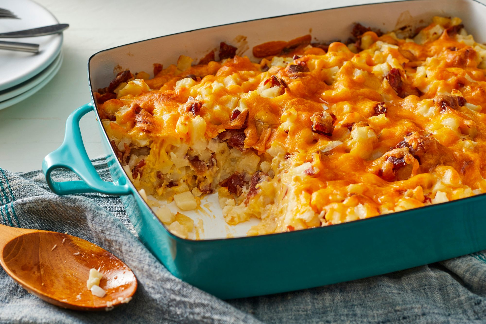

Brunch Potato Casserole

Description
This recipe was given to me, and I continue to pass it down to everyone who tries it! Aside from being so delicious, it's so versatile that I've even used it as a side dish for steak! This can be made the night before, then baked the next day -- allow 10 extra minutes of cooking time.
Ingredients
- 4 pounds new potatoes,skinned,cut into 1-inch cubes
- 1 pound processed cheese food, cubed
- 2 cups mayonnaise
- 1 onion,finely chopped
- 1 pound bacon, cooked crisp and chopped
Steps
- Preheat oven to 350 degrees F (175 degrees C).
- Place potatoes in a large pan, fill with water to cover potatoes, and bring to a boil. Cook until potatoes are just soft. Drain, place in a large bowl. While the potatoes are still hot, gently stir in cheese without mashing potatoes. Continue to stir, every minute or so, until cheese is melted.
- In a separate bowl, stir together mayonnaise, onion, and bacon. Gently stir into potatoes and cheese. Spread into a 13x9-inch baking dish.
- Bake in a preheated oven for 50 minutes.
Done!